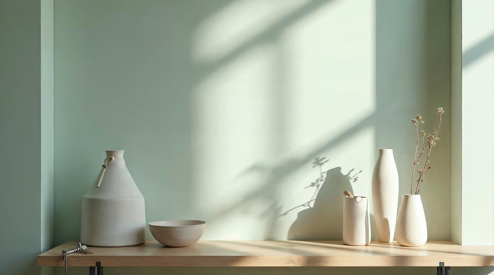
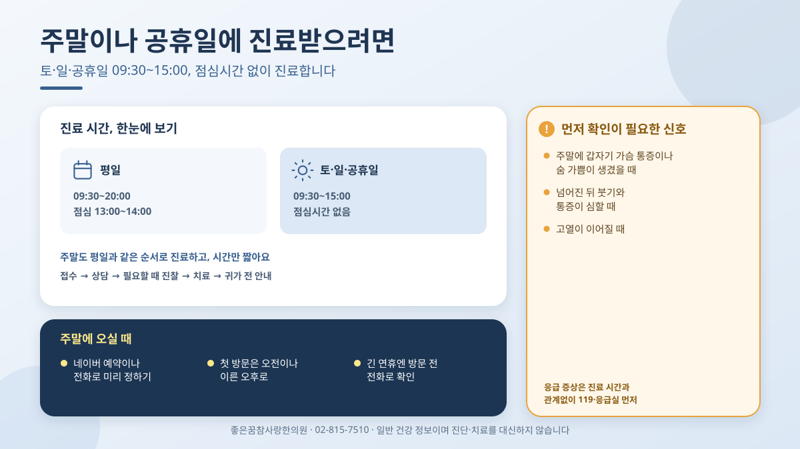

이종호 한의사 감수좋은꿈참사랑한의원 대표원장 (한의사 면허번호 19769)발행 2026-11-25 · 수정 2026-11-26
이 글의 차례
- 왜 미리 확인하면 좋을까요
- 주말 진료는 어떤 분께 잘 맞을까요?
- 주말에 처음 오시는 날은 이렇게 잡아 보세요
- 주말 방문 하루는 이렇게 흘러갑니다
- 먼저 이렇게 여쭙니다
- 일상에서 먼저 해 볼 수 있는 것
- 주말에 오기 전 주중에 해 둘 것
- 주말 진료 시간 안에서 시간대 고르기
- 출발 전 몸 상태도 챙겨 주세요
- 명절과 긴 연휴에는 이렇게 준비하세요
- 평일과 주말을 섞어 다니는 방법
- 한의원에서 함께 살필 수 있는 경우
- 교통사고 뒤 주말에 처음 오신다면
- 부모님을 모시고 주말에 오신다면
- 아이와 함께 주말에 오신다면
- 주말 진료 뒤 주중은 이렇게 보내 보세요
- 주말에만 다녀도 괜찮을까요?
- 다시 오실 때는 이렇게 이어서 봅니다
- 주말 방문 전 확인 목록
- 자주 하는 오해
- 헷갈리기 쉬운 점
- 이렇게 기록해 오시면 상담이 쉬워집니다
- 이런 증상은 먼저 확인이 필요합니다
평일에는 출근과 수업 때문에 시간을 내기 어려울 수 있습니다. 좋은꿈참사랑한의원은 토요일·일요일·공휴일에도 진료합니다. 주말은 평일보다 진료 시간이 짧아 미리 계획하면 더 편하게 다녀가실 수 있습니다.
예를 들어 토요일 오후 2시 40분에 처음 오시면 접수와 상담, 진찰, 치료까지 하기에는 시간이 빠듯할 수 있습니다. 처음 오시는 날은 오전이나 이른 오후로 잡으시면 이야기를 충분히 나눌 수 있습니다. 평일에는 저녁 8시까지 진료하므로, 퇴근 뒤 방문이 가능한 날이 있다면 그날과 주말을 섞어 다니셔도 됩니다.
주중에 몸이 불편해도 '주말에 가야지' 하고 미루다 보면, 막상 토요일 아침에는 늦잠과 집안일에 밀려 하루가 지나가 버리기 쉽습니다. 이 글에서는 주말 진료를 어떻게 계획하면 짧은 시간 안에서도 충분히 이야기를 나누고 갈 수 있는지 정리했습니다.
왜 미리 확인하면 좋을까요
- 주말과 공휴일은 진료 시간이 09:30~15:00으로 평일보다 짧습니다.
- 주말에는 점심시간이 없어 오전과 이른 오후 언제든 오실 수 있습니다.
- 예약을 해 두면 원하는 시간에 맞춰 오시기 쉽습니다.
- 첫 방문이라면 상담 시간을 넉넉히 잡는 것이 좋습니다.
- 명절 연휴처럼 긴 공휴일에는 방문 전 진료 여부를 전화로 확인하는 것이 안전합니다.
주말 진료는 어떤 분께 잘 맞을까요?
- 평일에는 출퇴근 시간 때문에 저녁 8시 전에 도착하기 어려운 직장인
- 평일 오후까지 수업과 학원이 이어지는 학생
- 아이를 맡길 곳이 마땅치 않아 주말에 가족과 함께 움직여야 하는 부모
- 교대 근무로 쉬는 날이 주말에 몰려 있는 분
- 평일에는 자녀가 바빠 주말에야 부모님을 모시고 올 수 있는 가족
이런 분들은 주말을 진료의 중심으로 삼고, 시간이 나는 평일 저녁을 사이사이 섞으면 다니는 흐름을 이어 가기 쉽습니다. 어떤 요일이 편한지는 첫 진료 때 말씀해 주시면 다음 방문 간격을 정할 때 함께 고려합니다.
주말에 처음 오시는 날은 이렇게 잡아 보세요
처음 오시는 날은 접수와 함께 불편한 곳과 생활 이야기를 충분히 듣는 시간이 필요해 재진보다 오래 걸릴 수 있습니다. 그래서 첫 방문은 오전이나 이른 오후로 잡고, 그날 오후 일정은 여유 있게 비워 두시기를 권합니다.
예를 들어 토요일 오전에 오신다면 아침을 가볍게 드신 뒤 출발하고, 진료 뒤에는 바로 무리한 운동이나 긴 외출을 잡지 않는 편이 몸을 살피기에 편합니다. 다음 방문을 언제로 할지도 그날 진료를 마치며 함께 정합니다.
주말 방문 하루는 이렇게 흘러갑니다
- 1. 예약한 시간보다 조금 일찍 도착해 접수합니다.
- 2. 처음 오셨다면 기본 정보를 적고, 약 목록과 검진 결과지가 있으면 함께 냅니다.
- 3. 원장이 맥을 짚으며 주중에 불편했던 상황과 오늘 가장 불편한 점을 여쭙습니다.
- 4. 필요하면 더 살핀 뒤 오늘 받을 치료와 이유를 먼저 설명드리고 치료를 진행합니다.
- 5. 귀가 전에는 다음 주중에 집에서 해 볼 것과 다음 방문 날을 함께 정합니다.
주말이라고 이 순서가 줄어들지는 않습니다. 다만 진료가 오후 3시에 끝나므로, 순서를 여유 있게 밟으려면 도착 시각을 넉넉히 잡는 것이 가장 중요합니다.
진료를 마치고 나서 궁금한 점이 뒤늦게 떠오르면 다음 진료 때 메모로 가져오셔도 되고, 급한 내용이라면 전화로 여쭤 주셔도 됩니다.
먼저 이렇게 여쭙니다
- 처음 오시나요, 다시 오시나요?
- 몇 시쯤 도착하실 예정인가요?
- 가장 불편한 곳은 어디인가요?
- 복용 중인 약이 있나요?
일상에서 먼저 해 볼 수 있는 것
- 네이버 예약이나 전화로 미리 시간 정하기
- 마감 시각에 너무 가깝게 오지 않기
- 첫 방문이면 약 목록과 검진 결과지 챙기기
- 비 오는 날은 이동 시간을 넉넉히 잡기
- 긴 연휴에는 방문 전 전화로 진료 여부 확인하기
주말에 오기 전 주중에 해 둘 것
주말에만 오시는 분은 다음 진료까지 엿새, 이레를 지내야 합니다. 그 사이 몸이 어땠는지 기억에만 맡기면 진료 날 아침의 상태만 떠오르기 쉬워, 주중의 모습을 짧게라도 적어 두시면 큰 도움이 됩니다.
- 불편이 가장 심했던 요일과 시간대
- 그날 한 일: 오래 앉아 있음, 야근, 무거운 짐, 운동
- 잠든 시각과 자다 깬 횟수
- 지난 진료 뒤 처음 하루 이틀 동안 몸이 어땠는지
- 주중에 새로 드신 약이나 바뀐 약
한 줄씩만 적어도 됩니다. 휴대폰 메모에 날짜만 적고 한두 단어를 남겨 두시면, 주말 진료 때 그 화면을 보여 주시는 것으로 충분합니다.
예를 들어 '화요일 야근 뒤 허리 뻐근, 수요일 잠 설침, 목요일 괜찮음'처럼만 적어도 됩니다. 이런 짧은 메모가 쌓이면 어느 요일, 어떤 일 뒤에 불편이 커지는지 진료실에서 함께 짚어 보기 쉬워집니다.
주말 진료 시간 안에서 시간대 고르기
토·일·공휴일에는 점심시간 없이 09:30부터 15:00까지 진료합니다. 오전 일찍 오시면 그날 오후를 온전히 쓸 수 있고, 늦잠을 자고 싶은 날이라면 점심 무렵이나 이른 오후도 괜찮습니다. 다만 오후 2시가 넘으면 진료 마감까지 남은 시간이 짧아지니, 처음 오시는 날이나 이야기할 것이 많은 날은 그보다 이르게 잡아 주세요.
예를 들어 토요일 오후에 가족 행사가 있다면 오전 진료를 잡고 행사에 가시면 되고, 일요일 아침을 느긋하게 보내고 싶다면 점심 전후로 오셔도 됩니다. 매주 비슷한 시간대로 맞추면 생활 리듬과 진료 간격을 함께 지키기 쉽습니다.
출발 전 몸 상태도 챙겨 주세요
주말 아침에는 늦잠을 자고 일어나 끼니를 거른 채 서둘러 나오시는 분이 있습니다. 너무 오래 굶은 상태로 치료를 받으면 기운이 빠지거나 어지러울 수 있어, 가볍게라도 드시고 오시기를 권합니다. 반대로 과식한 직후도 누워 있기 불편할 수 있습니다.
전날 늦게까지 술을 마셨다면 그 사실도 진료 때 말씀해 주세요. 예약 시간에 늦을 것 같다고 뛰어오시기보다, 미리 전화를 주시고 숨을 고르며 천천히 오시는 편이 진찰을 받기에도 편합니다.
명절과 긴 연휴에는 이렇게 준비하세요
- 연휴 중 진료 여부는 방문 전 전화로 먼저 확인합니다.
- 연휴 동안 귀성이나 여행으로 오기 어렵다면, 연휴 앞뒤로 진료 날짜를 미리 잡아 둡니다.
- 한약을 드시는 중이라면 연휴 동안 드실 양이 남아 있는지 미리 살펴봅니다.
- 오랜 운전이나 장시간 이동이 예정되어 있다면, 진료 때 이동 중에 해 볼 수 있는 요령을 여쭤 보세요.
평일과 주말을 섞어 다니는 방법
평일 저녁 8시까지 진료하므로, 주중 하루라도 퇴근 뒤 들를 수 있는 날이 있다면 주말과 번갈아 다니는 방법도 있습니다. 예를 들어 처음 몇 주는 몸 상태를 자주 살펴야 할 때가 있어 주말과 평일 저녁을 함께 쓰고, 상태가 안정되면 주말 위주로 간격을 넓힐 수 있습니다.
평일 13:00~14:00은 점심시간이라 그 시간대 예약은 어렵습니다. 어떤 요일, 어느 시간대가 꾸준히 가능한지 알려 주시면 그 안에서 다음 방문 계획을 세웁니다.
한의원에서 함께 살필 수 있는 경우
- 평일에 오기 어려운 경우 주말 일정에 맞춰 다음 방문 간격을 함께 정합니다.
- 통증이 주중에 심해지는 경우 주중 생활에서 할 수 있는 요령을 알려 드립니다.
- 교통사고 뒤 주말에 처음 오시는 경우 불편한 곳을 함께 살핍니다. 자동차보험 접수에 필요한 것은 방문 전 전화로 확인해 주세요.
좋은꿈참사랑한의원에서는 주말에도 평일과 같은 순서로 접수 뒤 맥부터 짚으며 불편한 점을 여쭙고, 필요하면 더 살핀 뒤 치료와 귀가 전 안내를 진행합니다. 다음 방문이 주말이어도 지난번 이야기부터 이어서 여쭙니다.
교통사고 뒤 주말에 처음 오신다면
사고는 금요일 저녁이나 주말 나들이 길에 생기기도 해서, 주말에 처음 오시는 경우가 적지 않습니다. 사고 날짜와 시각, 차 안에서 앉아 있던 자리, 부딪힌 방향을 기억나는 대로 적어 오시면 불편한 곳을 살피는 데 도움이 됩니다.
다른 병원에서 받은 검사 결과나 진단서가 있다면 함께 가져와 주세요. 사고 직후에는 괜찮다가 하루 이틀 지나 목이나 허리가 뻐근해지는 경우도 있어, 사고 뒤 날짜별로 어디가 언제부터 불편했는지 메모해 두시면 좋습니다. 건강보험(또는 자동차보험) 적용 여부는 방문 전 전화로 확인해 주세요.
부모님을 모시고 주말에 오신다면
평일에는 일 때문에 어렵고 주말에야 부모님을 모시고 올 수 있는 자녀분이 많습니다. 함께 오시면 부모님이 미처 말씀하지 못하는 평소 걸음걸이나 식사량, 밤에 자주 깨시는지 같은 이야기를 보태 주실 수 있어 상담이 한결 수월해집니다.
부모님이 드시는 약은 약 봉투나 처방전을 그대로 챙겨 오시면 됩니다. 다음 방문도 주말에 모시고 오기 어렵다면, 평일에 부모님 혼자 오실 수 있는지 함께 이야기해 두는 것도 방법입니다.
아이와 함께 주말에 오신다면
주말은 아이와 함께 움직이는 가족이 많은 날입니다. 보호자 본인이 진료를 받는 날 아이가 함께 온다면, 아이가 기다리는 동안 볼 책이나 간단한 간식을 챙겨 오시면 서로 편합니다.
아이가 진료를 받는 날이라면 평소 잠과 식사, 배변, 감기를 앓은 횟수를 보호자가 미리 정리해 오세요. 주중에 아이를 주로 돌보는 분이 함께 오시지 못한다면, 그분께 들은 이야기를 메모로 받아 오시는 것도 방법입니다.
주말 진료 뒤 주중은 이렇게 보내 보세요
주말에 진료를 받고 나면 다음 진료까지 한 주를 혼자 보내야 합니다. 그래서 귀가 전에 알려 드린 생활 요령을 주중에 얼마나 이어 가는지가 중요합니다. 처음에는 거창한 것보다, 출근길이나 점심시간처럼 이미 있는 일과에 하나를 얹는 방식이 오래갑니다.
- 오래 앉아 일한다면 한 시간에 한 번은 일어나 물을 마시러 다녀옵니다.
- 진료 때 알려 드린 동작이 있다면 아침이나 자기 전 중 한 번으로 시간을 정해 둡니다.
- 잠드는 시각을 주말과 평일에 너무 다르게 두지 않도록 해 봅니다.
- 불편이 심해진 날은 그날 한 일과 함께 메모해 다음 진료 때 보여 주세요.
주중에 불편이 커져 주말까지 기다리기 어렵다면 평일 저녁 진료를 이용하셔도 되고, 먼저 전화(02-815-7510)로 상황을 말씀해 주셔도 됩니다.
주말에만 다녀도 괜찮을까요?
주말에만 시간이 나서 걱정하시는 분이 많습니다. 다니는 간격은 요일보다 지금 몸 상태와 생활에 따라 정하는 것이어서, 주말에만 오실 수 있다면 그 사정에 맞춰 계획을 세웁니다. 그 대신 주중 한 주를 어떻게 보내셨는지 기록이 있으면 간격이 길어도 흐름을 놓치지 않고 이어 갈 수 있습니다.
간격을 어떻게 정할지는 첫 진료와 다음 몇 번의 진료를 거치며 몸의 반응을 보고 함께 이야기합니다. 일정이 바뀌어 주말에도 오기 어려운 주가 생기면, 미리 알려 주시면 그다음 방문을 다시 정하면 됩니다.
다시 오실 때는 이렇게 이어서 봅니다
주말마다 오시는 분이라도 진료는 지난번 이야기에서 이어집니다. 맥은 매번 다시 짚고, 지난 진료 뒤 한 주 동안 어떻게 지내셨는지, 주중 메모에 무엇이 적혀 있는지부터 여쭙습니다.
몇 주 동안 주중 기록이 쌓이면 어떤 요일, 어떤 일 뒤에 불편이 커지는지 흐름이 보이기도 합니다. 그 흐름을 바탕으로 주중 생활에서 바꿔 볼 것과 다음 방문 간격을 함께 다시 정합니다.
주말 방문 전 확인 목록
- 예약 시간을 네이버 예약이나 전화로 정해 두었다
- 진료가 오후 3시에 끝난다는 것을 기억하고 있다
- 처음 오는 날이라 오전이나 이른 오후로 잡았다
- 약 목록과 검진 결과지를 챙겼다
- 주중에 불편했던 날을 메모해 두었다
- 연휴라면 진료 여부를 전화로 확인했다
- 다음에 올 수 있는 요일을 생각해 두었다
자주 하는 오해
- 주말에는 진료를 짧게 본다고 여기기 쉽지만, 진료 순서는 평일과 같고 진료 시간대만 다릅니다.
- 주말은 예약 없이 가도 된다고 생각하시는 분이 있는데, 원하는 시간에 맞춰 오시려면 미리 예약해 두시는 쪽이 편합니다.
- 공휴일에는 당연히 쉰다고 여기기 쉽지만, 공휴일에도 09:30~15:00에 진료합니다. 다만 긴 연휴에는 방문 전 전화로 확인해 주세요.

헷갈리기 쉬운 점
주말 진료가 평일보다 간단한 진료라는 뜻은 아닙니다. 진료 순서는 같고 진료 시간이 짧습니다. 다만 진료가 오후 3시에 끝나 늦은 오후 방문은 어렵고, 접수 마감 시각과 원장별 진료 일정은 방문 전 전화(02-815-7510)로 확인해 주세요.
이렇게 기록해 오시면 상담이 쉬워집니다
- 주중에 불편했던 날과 상황
- 지난 방문 뒤 달라진 점
- 복용 중인 약 목록
- 다음에 오실 수 있는 요일
- 주말에만 오실 수 있는지, 평일 저녁도 가능한지
이런 증상은 먼저 확인이 필요합니다
- 주말에 갑자기 가슴 통증이나 숨 가쁨이 생긴 경우
- 넘어진 뒤 붓기나 통증이 심한 경우
이런 신호가 있으면 한의원보다 가까운 병원이나 응급실을 먼저 찾으세요.

여쭙는 것
- 처음 오시나요, 다시 오시나요?
- 몇 시쯤 도착하실 예정인가요?
- 가장 불편한 곳은 어디인가요?
생활에서 해 볼 것
- 네이버 예약이나 전화로 미리 시간 정하기
- 마감 시각에 너무 가깝게 오지 않기
- 첫 방문이면 약 목록과 검진 결과지 챙기기
한의원에서 함께 살필 것
- 평일에 오기 어려운 경우 주말 일정에 맞춰 다음 방문 간격을 함께 정합니다.
- 통증이 주중에 심해지는 경우 주중 생활에서 할 수 있는 요령을 알려 드립니다.
- 교통사고 뒤 주말에 처음 오시는 경우 불편한 곳을 함께 살핍니다. 자동차보험 접수에…
먼저 확인이 필요한 신호
- 주말에 갑자기 가슴 통증이나 숨 가쁨이 생긴 경우
- 넘어진 뒤 붓기나 통증이 심한 경우
한눈에 보는 표
| 구분 | 핵심 |
|---|---|
| 여쭙는 것 | 처음 오시나요, 다시 오시나요? 몇 시쯤 도착하실 예정인가요? |
| 생활에서 해 볼 것 | 네이버 예약이나 전화로 미리 시간 정하기 마감 시각에 너무 가깝게 오지 않기 |
| 한의원에서 함께 살필 것 | 평일에 오기 어려운 경우 주말 일정에 맞춰 다음 방문 간격을 함께 정합니다. 통증이 주중에 심해지는 경우 주중 생활에서 할 수 있는 요령을 알려 드립니다. |
| 먼저 확인이 필요한 신호 | 주말에 갑자기 가슴 통증이나 숨 가쁨이 생긴 경우 넘어진 뒤 붓기나 통증이 심한 경우 |
자주 묻는 질문
주말에도 예약이 되나요?
네이버 예약과 전화로 확인하실 수 있습니다.
주말 점심시간이 있나요?
토·일·공휴일에는 점심시간 없이 09:30~15:00 진료합니다.
평일 진료 시간은요?
평일은 09:30~20:00이며 점심 13:00~14:00입니다.
일요일에도 침 치료를 받을 수 있나요?
네, 일요일에도 09:30~15:00에 진료합니다. 방문 전 예약을 권합니다.
주말에 처음 가도 되나요?
네. 첫 방문은 상담 시간이 필요해 오전이나 이른 오후로 잡으시면 이야기를 충분히 나누기 좋습니다.
주말과 평일을 섞어서 다녀도 되나요?
네. 가능한 요일과 시간대를 알려 주시면 그 안에서 다음 방문 계획을 함께 정합니다.
좋은꿈참사랑한의원은 재진 때 지난번 이야기부터 이어서 여쭙니다. 진료시간과 예약은 오시는 길에서 확인하세요.
어디서 상담받을 수 있나요?
좋은꿈참사랑한의원은 서울 동작구 만양로2길 2 신성빌딩 3층·5층(서울 동작구 상도동, 7호선 상도역 3번 출구 근처)에 있습니다. 한의사 3명(이종호 대표원장, 조영기 수석진료원장, 정원영 진료원장)이 진료합니다. 진료시간은 평일 09:30~20:00(점심 13:00~14:00), 토·일·공휴일 09:30~15:00이며, 방문 전 전화로 확인을 권합니다. 예약은 네이버 예약, 카카오톡 상담, 전화 02-815-7510로 받습니다.
이 글은 일반적인 건강 정보이며 개인의 진단이나 치료를 대신하지 않습니다. 증상이 있거나 복용 중인 약이 있다면 진료를 통해 확인하세요. 치료 효과는 개인마다 다를 수 있습니다.
작성 기준: 일반적으로 알려져 있는 건강 정보를 참고해 정리했습니다(대표원장 감수). 증상 기록은 1~2주 동안 하루 1회, 비슷한 시간에 적어 오시면 지난 상태와 비교하기 쉽습니다.